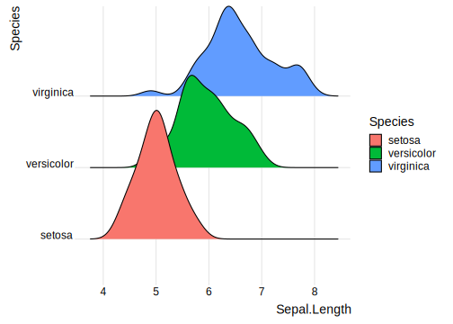
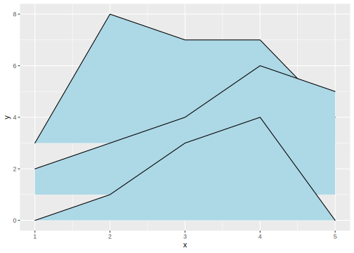
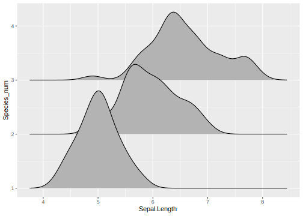
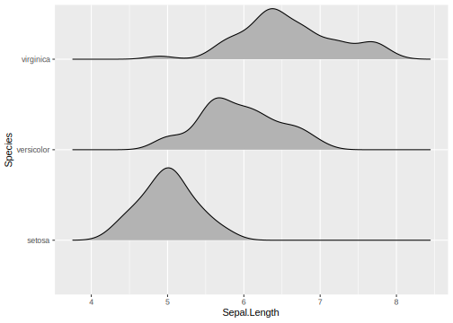

1 经济学人：Corruption and human development
来源：ggplot2 workshop by Harvad University
目标：
数据： data\EconomistData.csv
## # A tibble: 173 x 5
## Country HDI.Rank HDI CPI Region
## <chr> <dbl> <dbl> <dbl> <chr>
## 1 Afghanistan 172 0.398 1.5 Asia Pacific
## 2 Albania 70 0.739 3.1 East EU Cemt Asia
## 3 Algeria 96 0.698 2.9 MENA
## 4 Angola 148 0.486 2 SSA
## 5 Argentina 45 0.797 3 Americas
## 6 Armenia 86 0.716 2.6 East EU Cemt Asia
## 7 Australia 2 0.929 8.8 Asia Pacific
## 8 Austria 19 0.885 7.8 EU W. Europe
## 9 Azerbaijan 91 0.7 2.4 East EU Cemt Asia
## 10 Bahamas 53 0.771 7.3 Americas
## # ... with 163 more rows任务：
- 添加一条趋势线
- 改变点的形状和大小
- 改变因子
Region的顺序和标签
- 为部分点打上数据标签
- 修饰坐标轴：标题，标签、刻度等
- 把颜色图例的位置移到图的上部
- 添加注解: 判定系数(R^2)和来源信息
首先添加趋势线，注意这里将geom_smooth()图层放在散点图的上方 ； 在formula中指定回归方程
pc2 <- pc1 +
geom_smooth(mapping = aes(linetype = "r2"),
method = "lm",
formula = y ~ x + log(x), se = FALSE,
color = "red")
pc2 + geom_point()改变点的形状，这里使用shape=1,size=2.5:

和原图比对，原图的数据点边框更厚，边框内部更小。于是这里还要使用geom_point()中一个不太常见的参数stroke，用来控制点的边框的厚度(point border thickness)，并相应地减小size：
到这一步对数据点本身的修饰就基本结束了，可以把geom_point()图层也添加到基本对象中
下一步是部分数据点添加数据标签，使用geom_text_repel()以避免重叠，设置force=10控制标签移动的幅度。只为部分点添加标签的方法在散点图那一章有涉及到，那里我们创建了一个新列用于添加标签，部分观测的标签被ifelse()设置为空字符串。但是这里使用了更巧妙的办法，直接更改geom_text()图层用到的数据：
pointsToLabel <- c("Russia", "Venezuela", "Iraq", "Myanmar", "Sudan",
"Afghanistan", "Congo", "Greece", "Argentina", "Brazil",
"India", "Italy", "China", "South Africa", "Spane",
"Botswana", "Cape Verde", "Bhutan", "Rwanda", "France",
"United States", "Germany", "Britain", "Barbados", "Norway", "Japan",
"New Zealand", "Singapore")
library(ggrepel)
(pc4 <- pc3 + geom_text_repel(aes(label = Country),
color="grey20",
data = filter(corruption, Country %in% pointsToLabel),
force = 10))
下一步是改变 Region 的排序和标签，原数据中 Region 是以字符串存储的，这里先要把它变成因子：
corruption$Region <- factor(corruption$Region,
levels = c("EU W. Europe",
"Americas",
"Asia Pacific",
"East EU Cemt Asia",
"MENA",
"SSA"))
pc4- 修饰坐标轴：设置标题、刻度和限度
- 添加主标题(title)
- 添加来源说明(caption)
(pc5 <- pc4 +
scale_x_continuous(name = "Corruption Perceptions Index, 2011 (10=least corrupt)",
limits = c(.9, 10.5),
breaks = 1:10) +
scale_y_continuous(name = "Human Development Index, 2011 (1=Best)",
limits = c(0.2, 1.0),
breaks = seq(0.2, 1.0, by = 0.1)) +
labs(title="Corruption and Human Development",
caption="Sources: Transparency International; UN Human Development Report"))
主题修饰：
library(grid) # for the 'unit' function
(pc6 <- pc5 +
theme_bw() +
theme(panel.border = element_blank(), ## 取消四周的边框线
panel.grid = element_blank(),
panel.grid.major.y = element_line(color = "gray"),
text = element_text(color = "gray20"),
axis.title.x = element_text(face = "italic"),
axis.title.y = element_text(face = "italic"),
legend.position = "top", ## 调整图例的位置和朝向
legend.direction = "horizontal",
legend.box = "horizontal",
legend.text = element_text(size = 8),
plot.caption = element_text(hjust = 0),
plot.title = element_text(size = 16, face = "bold"))
)
颜色标度调整，并且把图例变为一行 ； 更改图例的标签 ；
(pc7 <- pc6 +
scale_color_manual(name = "",
values = c("#24576D",
"#099DD7",
"#28AADC",
"#248E84",
"#F2583F",
"#96503F"),
labels=c("OECD",
"Americas",
"Asia &\nOceania",
"Central &\nEastern Europe",
"Middle East &\nnorth Africa",
"Sub-Saharan\nAfrica"),
guide=guide_legend(nrow=1)))
计算模型的\(R^2\)系数
mR2 <- summary(lm(HDI ~ CPI + log(CPI),
data = corruption))$r.squared
mR2 <- paste0(format(mR2, digits = 2), "%")下面把它添加到图形中，annotate()函数并不擅长把注解添加到绘图区域以外的地方；不过我们早有准备，这里实际上是要把linetype图例中的labels设定为判定系数：
pc8 <- pc7 +
scale_linetype(name = "", ## 图例的名字
labels = list(bquote(R^2==.(mR2))),
guide = guide_legend(override.aes = list(linetype = 1, size = 2, color = "red"), order=2))
pc8